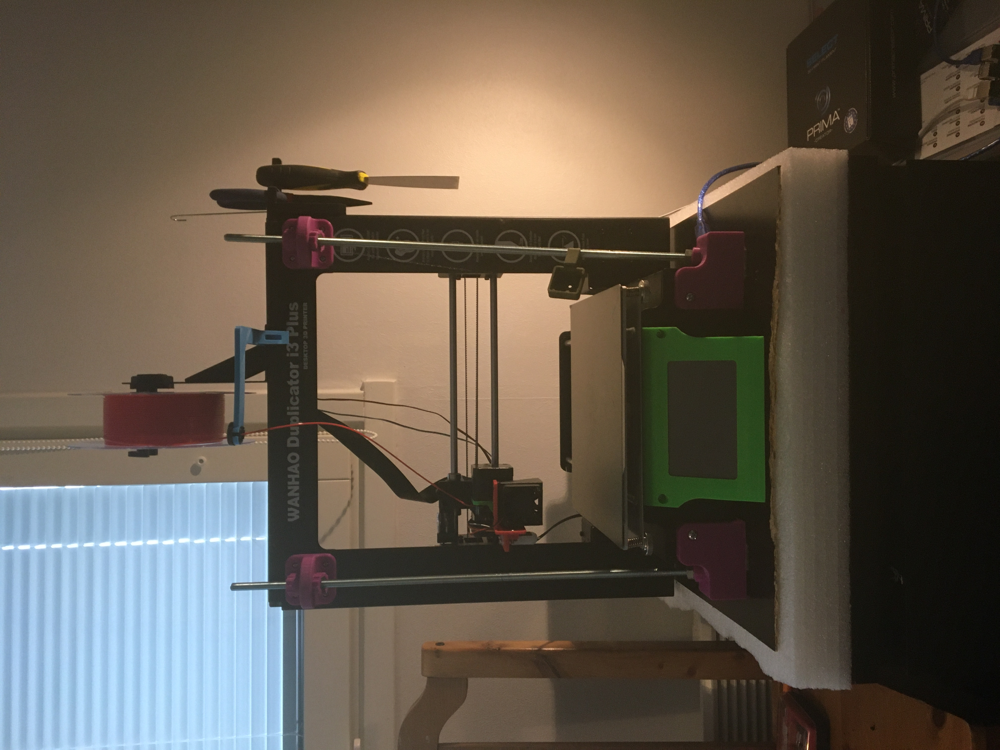

What is 3D printing?
For the most part 3D printing means the abiltiy to print in 3 dimensions (duh), however in most cases its more like 2.5D but that is not what i am here to educate about, Anyway on to the second question.
What types of 3D printing are there?
There are many diffrent types of 3D printing but the most common are FDM (fused deposition modeling) or FFF (fused filament fabrication) and SLA (Stereolithography) or MSLA(masked Stereolithography) the main diffrance the first two (FDM and FFF) are practically the same thing as well with the second two (sla and msla).
How do these work then?
Well the first one works in the way having filament pushed in to a hot nozzle melting it and slowly laying it down per layer in a specifc pattern to make a 3d object like shown in the gif under this text, MSLA and sla use almost the same idea however they use a type of resin that cures when it get hits with uv light so in a MSLA printer you have an LCD screen under a vat filled with resin witha type of lift that the cured resin adhere to because of the fact that it ueses an lcd it is usally much finer prints that come out of a sla printer compared to a normal FDM printer (see picture above) and a sla printer so the other type of SLA printer uses a directed laser which is even finer in detial but takes longer as it cant cure an entire layer at the time
SLA printer
FDM printer
